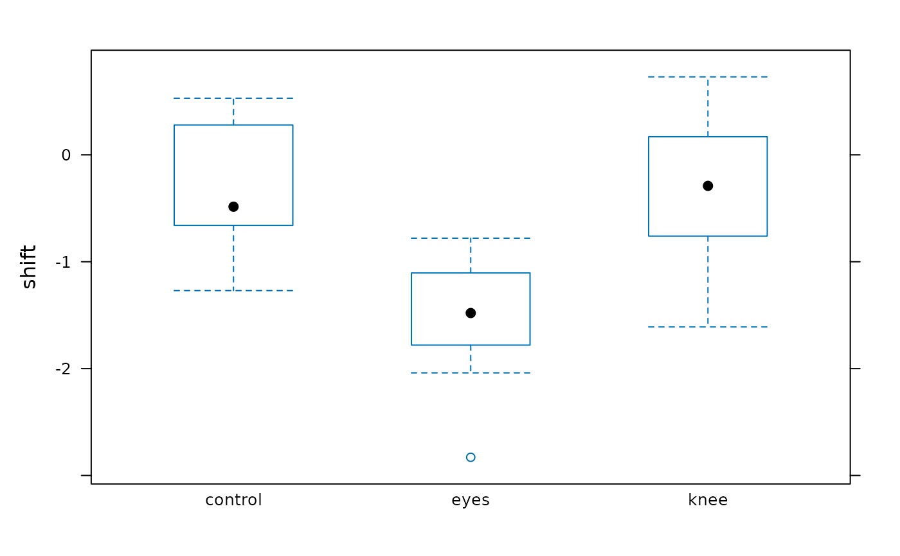

Circadian Rhythm Phase Shift
JetLagKnees.RdShift in circadian rhythm (hours; shift) in three light treatments
(treatment).
Format
A data frame with 22 observations on the following 2 variables.
- treatment
a factor with levels
control,eyes, andknee- shift
a numeric vector
Source
inferred from Wright, K.P., Jr. and C.A. Czeisler 2002. Absence of circadian phase resetting in response to bright light behind the knees. Science 297: 571.
Examples
demo(sec15.1)
#>
#>
#> demo(sec15.1)
#> ---- ~~~~~~~
#>
#> > ### JetLagKnees
#> >
#> > # Approximate Figure 15.1-1
#> > xyplot(shift ~ treatment, data = JetLagKnees)
#>
#> > bwplot(shift ~ treatment, data = JetLagKnees)

#>
#> > # Table 15.1-1
#> > if (require(plyr)){
#> + smry <- ddply(JetLagKnees, .(treatment),
#> + function(x)c(Mean = mean(x$shift),
#> + s = var(x$shift),
#> + n = length(x$shift)))
#> + print(smry)
#> +
#> + # Grand mean
#> + weighted.mean(smry$Mean, smry$n)
#> + }
#> treatment Mean s n
#> 1 control -0.3087500 0.3813839 8
#> 2 eyes -1.5514286 0.4988810 7
#> 3 knee -0.3357143 0.6253952 7
#> [1] -0.7127273
#>
#> > # Subset the three treatment groups
#> > control <- subset(JetLagKnees, treatment == "control")$shift
#>
#> > knee <- subset(JetLagKnees, treatment == "knee")$shift
#>
#> > eyes <- subset(JetLagKnees, treatment == "eyes")$shift
#>
#> > # k is the number of groups
#> > k <- length(unique(JetLagKnees$treatment))
#>
#> > # Calculate n
#> > n <- length(JetLagKnees$shift)
#>
#> > control.n <- length(control)
#>
#> > knee.n <- length(knee)
#>
#> > eyes.n <- length(eyes)
#>
#> > # Calculate standard deviations
#> > control.sd <- sd(control)
#>
#> > knee.sd <- sd(knee)
#>
#> > eyes.sd <- sd(eyes)
#>
#> > # Error mean square
#> > (SS.error <- ((control.sd^2 * (control.n - 1)) +
#> + (knee.sd^2 * (knee.n - 1)) +
#> + (eyes.sd^2 * (eyes.n - 1))))
#> [1] 9.415345
#>
#> > (MS.error <- SS.error / (n - k))
#> [1] 0.4955445
#>
#> > # Grand mean
#> > (grand.mean <- (control.n * mean(control) + knee.n * mean(knee) +
#> + eyes.n * mean(eyes)) / n)
#> [1] -0.7127273
#>
#> > # Group mean square
#> > (SS.groups <- (control.n * (mean(control) - grand.mean)^2) +
#> + (knee.n * (mean(knee) - grand.mean)^2) +
#> + (eyes.n * (mean(eyes) - grand.mean)^2))
#> [1] 7.224492
#>
#> > (MS.groups <- SS.groups / (k - 1))
#> [1] 3.612246
#>
#> > # F
#> > (F <- MS.groups / MS.error)
#> [1] 7.289449
#>
#> > # P-value
#> > pf(F, 2, 19, lower.tail = FALSE)
#> [1] 0.004472271
#>
#> > # Figure 15.1-3
#> > (fcrit <- qf(0.05, 2, 19, lower.tail = FALSE))
#> [1] 3.521893
#>
#> > curve(df(x, 2, 19), from = 0, to = 10,
#> + ylab = "Probability Density",
#> + xlab = expression(F[paste("2,19")]),
#> + xaxs = "i", yaxs = "i")
#>
#> > x <- seq(fcrit, 10, length = 100)
#>
#> > y <- df(x, 2, 19)
#>
#> > polygon(c(x[1], x, x[100]), c(0, y, df(10, 2, 19)),
#> + col = "red", border = NA)
#>
#> > # R^2
#> > (SS.total <- SS.groups + SS.error)
#> [1] 16.63984
#>
#> > SS.groups/SS.total
#> [1] 0.4341684
#>
#> > # With aov()
#> > aov.obj <- aov(shift ~ treatment, data = JetLagKnees)
#>
#> > summary(aov.obj)
#> Df Sum Sq Mean Sq F value Pr(>F)
#> treatment 2 7.224 3.612 7.289 0.00447 **
#> Residuals 19 9.415 0.496
#> ---
#> Signif. codes: 0 ‘***’ 0.001 ‘**’ 0.01 ‘*’ 0.05 ‘.’ 0.1 ‘ ’ 1